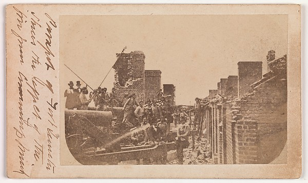

“Parapet of Fort Sumter shows the effect of the fire from Cummings Point.”
Tap the picture.
Carte de visite, c. 1863–65, Fort Sumter, South Carolina; photographer unknown to me. Inscribed on the card in ink (read by me, with doubt over “Cummings”): “Parapet of Fort Sumter shows the effect of the fire from Cummings Point.” The second line is Bruce Bairnsfather’s, Fragments from France, 1917, verbatim. They are fifty years and an ocean apart and say the same thing about the same wall. Nothing else here is mine except the alternation and the count.
Fragments, without the pictures